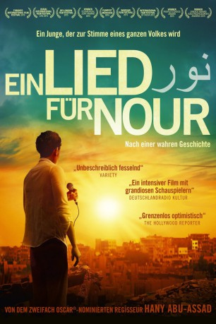

#6034 Ein Lied für Nour
 
 IMDB-Wertung: 6.8 / 10
IMDB-Wertung: 6.8 / 10  Metascore: 0
Metascore: 0 
Taxifahrer Mohammed Assaf (Tawfeek Barhom) ist im kriegsgebeutelten Gazastreifen aufgewachsen und ein leidenschaftlicher Musiker. Seine Stimme verzaubert jeden, der sie hört, aber bislang kam nur seine Familie in den Genuss, wenn er gemeinsam mit seiner Schwester Nour (Hiba Attalah) bei Familienfeiern auftrat. Mohammed träumt davon, dass sich das eines Tages ändert, er will eine Karriere starten und vor großem Publikum auftreten – und bald bietet sich ihm endlich die langersehnte Chance. Von einem Fahrgast erfährt er, dass in Kairo ein Vorsingen für die neue Staffel von "Arab Idol" stattfindet, einer beliebten Castingshow für junge Gesangstalente. Allen politischen und gesellschaftlichen Widrigkeiten zum Trotz versucht der Palästinenser Mohammed an dem Casting für die arabische Show teilzunehmen und sein Leben dadurch für immer zu verändern...
Jahr: 2015
Dauer: 98 Minuten
FSK: 0
Land: Ägypten Studio: Koch MediaTonspuren:
Untertitel: Deutsch,
Auflösung: 1080p (1920x808) Größe: 4812 MB
Genre: Drama, Musik, Komödie, Biographie
Regisseur: Hany Abu-Assad
Drehbuch: Sven Taddicken
Soundtrack:
Darsteller:
- Tawfeek Barhom als Mohammed Assaf
- Eyad Hourani als Ali
 Ashraf Barhom als Smuggler
Ashraf Barhom als Smuggler- Nadine Labaki als Shadia
 Ali Suliman als Said
Ali Suliman als Said- Maisa Abd Elhadi als Hiba
- Hany Abu-Assad als Samir
- Jana Zeineddine als Rand
- Kais Attalah als Mohammed Assaf, younger
- Hiba Attalah als Nour
- Ahmad Qasem als Young Ahmad
- Abdel Kareem Barakeh als Young Omar
- Teya Hussein als Young Amal
- Dima Awawdeh als Amal
- Ahmed Al Rokh als Omar
- Saber Shreim als Ahmad
- Amer Hlehel als Kamal
- Manal Awad als Mohammed's Mother
- Walid Abed Elsalam als Mohammed's Father
- Ali Jaber als Ali Jaber
- Dima Al-Jamel Abu-Assad als Host of Star Palestine
- Hussein Nakhleh als Taxi Customer
- Husam Al-Azza als Border Officer
- Baher Agbariya als Doctor 1
- Nabil Al Raee als Doctor 2
- Ameer Abu Elrub als Cameraman
- Jamal Khalaile als Abu-Khaled
- Sobhi Hosari als Groom
- Em Mouhamad als Angry Woman
- Hadi Abu Sini als Generator Boy
- Azmi Al-Hasani als Ismael
- Raneem Al-Dawood als Female Contestant
- Kawa Shekho als Male Contestant
- Sanad Haddadin als Contestant
- Shady Habashy als Head Guard
- Ahmad Al-Ajarma als Security Guard
- Yaser Haddad als Assistant Producer
- Adeeb Hadi als Kareem
- Rami Yasin als Beirut Doctor
- Rania Al-Nimer als Press
- Mohammad Atallah als Costume Designer
- Sandy Habashneh als
Datei: X:\2015(G-M)\Lied für Nour, Ein (2015, FSK0, 1920x808).mkv seit 24.04.2017
Festplatte: HD 2015(A-Z)
 Es gibt insgesamt 129 Filme in der Gruppe '2015(G-M)'
Es gibt insgesamt 129 Filme in der Gruppe '2015(G-M)'